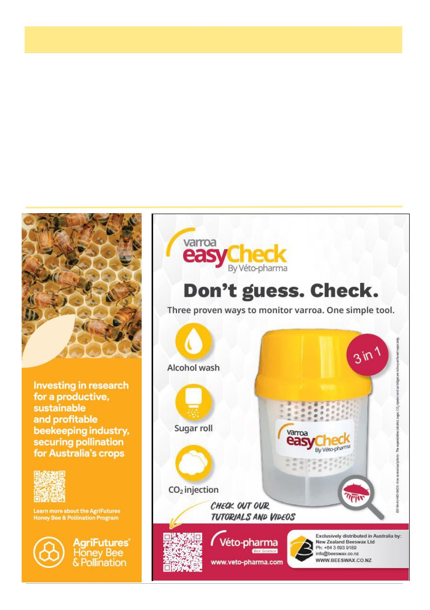

May 2026
23
Season Report, cont’d
ground boggy, so I have other bee sites in areas already
infected with varroa so they will over winter there.
Since I have improved my wash technique I have found
varroa. I have used windscreen wiper wash and found
it works.
I wrapped up varroa mites in a serviette to take
home for inspection with magnification. At home I
discovered they were still alive!!!! And walking
around.
At a bee site that has a lot of wild mustard [Sinapis
arvensis] I was surprised to find seeds in the wash. I
don't know if they came from the plants during the
shaking or if they were attached to the bees? I have
found a Pseudoscorpion and a miniature fly about the
size of a varroa, which unfortunately we dropped while
examining it.
When I bring honey home for extracting, I keep it
locked up in the big shed until any bees that have re-
mained on the frames are dead so they don't transfer the
possible varroa to home area.
Consulting my commercial beekeeping friends who
have had varroa for 12 months: when using brood un-
capping, only on drone brood have they seen varroa
mites. They conducted tests and found that Bayvarol
treated hives had no varroa in test washes after treat-
ment. Oxalic acid strips initially had only one mite but
since all mites seem to have been killed. The bees
chewed up the oxalic strips over 10 weeks to almost
nothing. Where their hives are located the varroa is
only in the initial phase and no mite bombs.
A Mildura beekeeper is getting 200 varroa in wash-
(Continued from page 22)
(Continued on page 24)